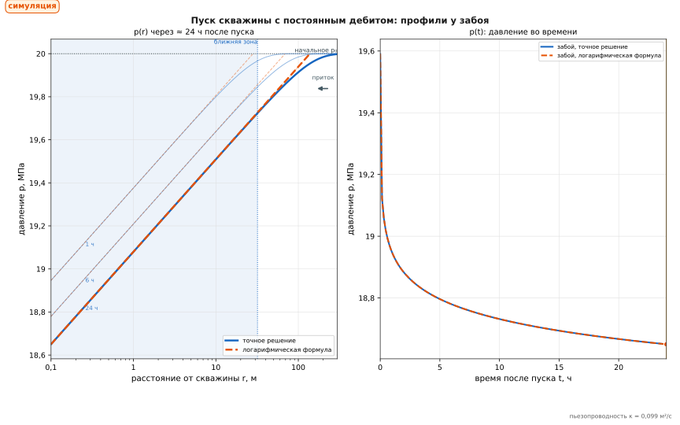

Путь › Когда точное решение применимо и как ввести движущуюся границу › Шаг 43 из 60
Как падает давление около скважины
В книге: «Плоскорадиальный фильтрационный поток упругой жидкости. Основная формула теории упругого режима фильтрации» стр. 493
Опирается на: шаг 38 «Когда достаточно логарифма» (предпосылка), шаг 39 «Расход и скорость вокруг скважины» (предпосылка), шаг 31 «Как задать пуск скважины» (опровергает заблуждение)
Суть
Вблизи скважины с постоянным дебитом профили давления логарифмические.
Давление на забое со временем падает, а наклон профиля у забоя остаётся тем же.
В ближней зоне r² ≤ 0,03·4κt градиент почти не зависит от времени, как при установившейся фильтрации.
Пороговая идея. Давление может продолжать снижаться, хотя радиальный градиент вблизи скважины почти не меняется во времени. модель
Видеоразбор
130 с · 16:9
После просмотра
Как бы вы автоматически проверяли, к каким замерам можно применять эту формулу?
К заданиямТекст видео и источники
- 0:00 Давление на забое всё время падает. Почему же наклон профиля у забоя не меняется?
- 0:06 Смотрим на скважину, которую пустили в работу с постоянным дебитом. стр. 493
- 0:10 Слева — вид сверху: цветом показано, насколько давление упало вокруг скважины.
- 0:16 Справа — профиль: как давление меняется с расстоянием от скважины. Это пьезометрическая кривая.
- 0:23 Как будет меняться давление на забое, пока скважина работает?
- 0:28 Оно падает с течением времени: профиль у скважины опускается всё ниже. стр. 493
- 0:33 Для примера тонкими линиями оставлены профили через час, шесть часов и сутки.
- 0:38 Для масштаба: пласт условно толщиной десять метров, а область падения давления — сотни метров.
- 0:44 Допустим, пласт однородный и горизонтальный: тогда жидкость идёт к скважине по горизонтали.
- 0:50 Теперь растянем область у скважины: расстояние отложим в логарифмической шкале.
- 0:55 Вблизи забоя профили становятся прямыми — значит, это логарифмические линии. стр. 493
- 1:00 Для точек у забоя автор так и считает — по логарифмической формуле. Она показана штрихом. стр. 493
- 1:07 Со временем вся линия опускается: давление на забое падает, это видно на графике справа. стр. 493
- 1:12 Но новые линии параллельны старым: углы наклона касательных на забое одинаковы. стр. 493
- 1:17 Одинаковый наклон не значит, что давление на забое стоит: оно продолжает падать. стр. 493 стр. 493
- 1:22 Наклон профиля — это градиент давления. Его находят, дифференцируя давление по радиусу. стр. 493
- 1:29 Автор задаёт ближнюю зону: квадрат радиуса не больше трёх сотых от четырёх каппа тэ. стр. 493
- 1:35 Каппа — пьезопроводность пласта, тэ — время после пуска скважины.
- 1:40 Внутри этой зоны градиент давления практически не зависит от времени. стр. 493
- 1:44 И считается он так же, как при установившемся притоке несжимаемой жидкости. стр. 493
- 1:49 За границей зоны точное решение и логарифмическая формула расходятся — это видно на профиле. стр. 493
- 1:55 Вывод для практики: у забоя градиент берут из логарифмической формулы, дифференцируя её по радиусу. стр. 493 стр. 493
- 2:01 Но сначала проверяют, что точка лежит в ближней зоне. стр. 493
- 2:05 Как бы вы автоматически проверяли, к каким замерам можно применять эту формулу?
Как это работает
Что рассматриваем
Автор показывает пьезометрические кривые вблизи скважины с постоянным дебитом Q₀. Пьезометрическая кривая — профиль давления по расстоянию в выбранный момент. Их показывает рис. 23.4. стр. 493
«В заключение покажем, как ведут себя пьезометрические кривые вблизи скважины, которая эксплуатируется с постоянным дебитом Q₀ (рис. 23.4).»
Как получить градиент
Для точек вблизи забоя автор берёт логарифмическую формулу (23.53). Её дифференцируют по радиусу r и получают градиент давления. стр. 493
«Для точек вблизи забоя можно пользоваться формулой (23.53).»
«Продифференцировав ее по координате r, найдем градиент давления»
Ближняя зона
Вывод о градиенте верен для радиусов, где r² ≤ 0,03·4κt. По выводу автора, там градиент практически не зависит от времени. Его формула та же, что для установившейся фильтрации несжимаемой жидкости. стр. 493
«Из этой формулы следует, что градиент давления для значений r, удовлетворяющих неравенству r² ≤ 0,03 · 4κt, практически не зависит от времени и определяется по той же формуле, что и для установившейся плоскорадиальной фильтрации несжимаемой жидкости.»
«Из этой формулы следует, что градиент давления для значений r, удовлетворяющих неравенству r² ≤ 0,03 · 4κt, практически не зависит от времени и определяется по той же формуле, что и для установившейся плоскорадиальной фильтрации несжимаемой жидкости.»
«Из этой формулы следует, что градиент давления для значений r, удовлетворяющих неравенству r² ≤ 0,03 · 4κt, практически не зависит от времени и определяется по той же формуле, что и для установившейся плоскорадиальной фильтрации несжимаемой жидкости.»
Форма кривых
Для этих радиусов пьезометрические кривые — логарифмические линии. Давление на забое падает с течением времени. Углы наклона касательных θ на забое одинаковы для всех кривых. стр. 493
«Для указанных значений r пьезометрические кривые представляют собой логарифмические линии (рис. 23.4).»
«Давление на забое скважины падает с течением времени, углы наклона касательных θ на забое одинаковы для всех кривых.»
«Давление на забое скважины падает с течением времени, углы наклона касательных θ на забое одинаковы для всех кривых.»

Обозначения на рисунке
На рис. 23.4 rс — радиус скважины. Rк — радиус кругового контура питания или круговой непроницаемой границы пласта. стр. 493
«при пуске скважины с постоянным дебитом Q₀; rc – радиус скважины»
«Rк – радиус кругового контура питания или радиус круговой непроницаемой границы пласта.»
Частая ошибка
Одинаковый наклон у забоя не значит, что давление там не меняется. Кривые сдвигаются вниз целиком, сохраняя наклон. Вдали от скважины вывод о неизменном градиенте без проверки порога переносить нельзя. стр. 493
Нюанс
В извлечённой записи градиента нет толщины пласта h в знаменателе. При дифференцировании (23.53) множитель h остаётся. Без него размерность не совпадает с давлением на расстояние. стр. 493
По шагам
Как исследовать давление у забоя
- Вблизи забоя примените логарифмическую формулу давления (23.53). стр. 493
- Продифференцируйте давление по радиусу. стр. 493
- Проверьте условие ближней зоны r² ≤ 0,03·4κt. стр. 493
- На профилях сравните изменение давления и наклоны касательных у забоя. стр. 493
Цифры и условия
- Ближняя зона: r² ≤ 0,03·4κt. стр. 493
- В ближней зоне градиент практически не зависит от времени. стр. 493
Формулы
Запись градиента в извлечённом источнике: в знаменателе нет толщины пласта. Не использовать для вычислений без проверки. стр. 493
| Обозначение | Что это | Единицы |
|---|---|---|
| $p$ | давление | Па |
| $r$ | расстояние от оси скважины | м |
| $Q_0$ | постоянный объёмный дебит скважины | м³/с |
| $\mu$ | динамическая вязкость жидкости | Па·с |
| $k$ | проницаемость породы | м² |
Граница области, где градиент практически не зависит от времени. стр. 493
| Обозначение | Что это | Единицы |
|---|---|---|
| $r$ | расстояние от оси скважины | м |
| $\kappa$ | коэффициент пьезопроводности | м²/с |
| $t$ | время после пуска | с |
Частая ошибка модель
Ошибка: Одинаковый наклон профиля означает, что давление на забое не меняется.
На самом деле: По автору, наклоны касательных при забое одинаковы, но давление на забое продолжает снижаться. стр. 493
Что это значит для данных
Для точек вблизи забоя берут логарифмическую формулу давления и дифференцируют её по радиусу.
- Вход
- Дебит, радиус, время, пьезопроводность и параметры формулы для давления.
- Выход
- Градиент и форма пьезометрических кривых около скважины.
- Где ломается
- Далеко от скважины нельзя переносить вывод о неизменном во времени градиенте без проверки порога.
Где здесь ручной труд специалиста
- Входные данные
- Дебит, радиус, время, пьезопроводность и параметры формулы для давления.
- Ручные шаги
- Вычислить аргумент, сверить границу ближней зоны, проверить градиент дифференцированием.
- Точки суждения
- Не смешивать производную по радиусу и изменение давления по времени.
- Время
- Дифференцирование быстрое, но нужна проверка размерностей.
- Типичные ошибки
- Из совпадения наклонов сделать вывод, что давление на забое перестало падать.
Аналогия модель
Как несколько профилей сигнала могут иметь одинаковый наклон вблизи точки, хотя их уровни продолжают расходиться.
Где аналогия перестаёт работать: У пластового давления пространственная форма следует из модели процесса, а не из вычитания постоянного смещения произвольного сигнала.
Глубже
Проверка градиента по формуле давления модель
При дифференцировании (23.53) в знаменателе остаётся множитель h — толщина пласта. Напечатанная в извлечённом тексте правая часть без h имеет размерность давления, а не давления на расстояние.
Рисунки книги к этому шагу
- Рис. 23.4. Рис. 23.4. Пьезометрические кривые при пуске скважины с постоянным дебитом Q₀; rc – радиус скважины; Rк – радиус кругового контура питания или радиус круговой непроницаемой границы пласта. стр. 493 (не перерисован — смотрите в книге)
Новые понятия
- Пьезометрическая кривая
- Здесь профиль давления по расстоянию от скважины в выбранный момент. стр. 493 модель
- Градиент давления
- Изменение давления на единицу расстояния по радиусу. стр. 493 модель
- Забой
- Нижняя часть скважины, где она сообщается с пластом. стр. 493 модель
- Установившаяся фильтрация
- Движение жидкости, при котором характеристики потока в каждой точке не меняются со временем. стр. 493 модель
Проверь себя
Верный ответ: 0,03
Автор задаёт ближнюю зону как r² ≤ 0,03·4κt. Где это в тексте (стр. 493) →
Верный ответ: Давление падает, а наклон касательной тот же
Кривые сдвигаются вниз, сохраняя наклон у забоя. Где это в тексте (стр. 493) →
Верный ответ: На формулу установившейся фильтрации несжимаемой жидкости
Автор прямо связывает градиент в ближней зоне с установившимся случаем. Где это в тексте (стр. 493) →
Источник
Все утверждения шага с дословной цитатой автора и страницей книги (по PDF).
Кривые рассматриваются после пуска скважины с постоянным дебитом. наблюдение
«В заключение покажем, как ведут себя пьезометрические кривые вблизи скважины, которая эксплуатируется с постоянным дебитом Q₀ (рис. 23.4).»
Для точек вблизи забоя автор применяет логарифмическую формулу. наблюдение
«Для точек вблизи забоя можно пользоваться формулой (23.53).»
Градиент выводят дифференцированием давления по радиусу. наблюдение
«Продифференцировав ее по координате r, найдем градиент давления»
Порог ближней зоны для вывода о градиенте: квадрат радиуса не больше 0,03 · 4κt. наблюдение
«Из этой формулы следует, что градиент давления для значений r, удовлетворяющих неравенству r² ≤ 0,03 · 4κt, практически не зависит от времени и определяется по той же формуле, что и для установившейся плоскорадиальной фильтрации несжимаемой жидкости.»
В указанной ближней зоне градиент давления практически не зависит от времени. вывод
«Из этой формулы следует, что градиент давления для значений r, удовлетворяющих неравенству r² ≤ 0,03 · 4κt, практически не зависит от времени и определяется по той же формуле, что и для установившейся плоскорадиальной фильтрации несжимаемой жидкости.»
В ближней зоне градиент описывается той же формулой, что и для стационарной плоскорадиальной фильтрации несжимаемой жидкости. вывод
«Из этой формулы следует, что градиент давления для значений r, удовлетворяющих неравенству r² ≤ 0,03 · 4κt, практически не зависит от времени и определяется по той же формуле, что и для установившейся плоскорадиальной фильтрации несжимаемой жидкости.»
Для указанных радиусов пьезометрические кривые логарифмические. вывод
«Для указанных значений r пьезометрические кривые представляют собой логарифмические линии (рис. 23.4).»
Давление на забое уменьшается со временем. вывод
«Давление на забое скважины падает с течением времени, углы наклона касательных θ на забое одинаковы для всех кривых.»
Углы наклона касательных на забое одинаковы для всех показанных кривых. вывод
«Давление на забое скважины падает с течением времени, углы наклона касательных θ на забое одинаковы для всех кривых.»
В подписи к рисунку радиус скважины обозначен как rc. наблюдение
«при пуске скважины с постоянным дебитом Q₀; rc – радиус скважины»
В подписи к рисунку внешний радиус определён как радиус кругового контура питания или круговой непроницаемой границы. наблюдение
«Rк – радиус кругового контура питания или радиус круговой непроницаемой границы пласта.»